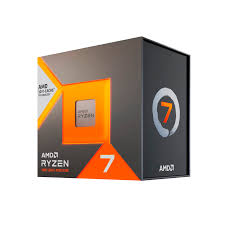
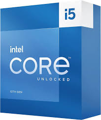
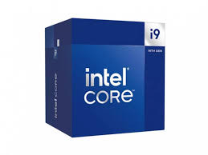
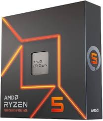
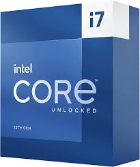

| Producto | Descripción | Precio | Saber mas |
|---|---|---|---|
|  | Cuenta con 8 núcleos y 16 hilos Este procesador es conocido por su excelente rendimiento en videojuegos, gracias a su tecnología 3D V-Cache. Es ideal para jugadores que buscan altas tasas de cuadros por segundo. |
$11,000 MXN | Saber más |
|  | Es una muy buena opcion para usuarios que buscan un procesador que no sea tan caro pero que ofrezca buen rendimiento. Este procesador ofrece un buen equilibrio entre rendimiento y precio. |
$8,000.00 MXN | Saber más |
|  | Posee un alto número de núcleos e hilos, lo que lo hace muy potente. Es uno de los procesadores de gama alta de Intel, diseñado para ofrecer un rendimiento excepcional en tareas exigentes como la edición de video y el renderizado 3D. Es muy bueno para gaming y para trabajos de alta demanda. |
$13,000 MXN | Saber más |
|  | RAM: 8GOfrece un buen rendimiento en juegos y aplicaciones de productividad. Es una opción popular para jugadores y usuarios que buscan un procesador de gama media con un buen rendimiento. |
$6,000 MXN | Saber más |
|  | Muy bueno para multitarea y para videojuegos. Este procesador de Intel, se situa en la gama alta, y es un procesador de alto rendimiento. |
$9,000 MXN | Saber más |